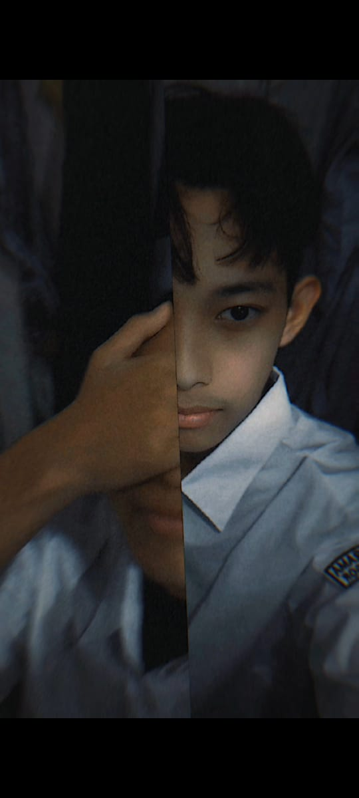
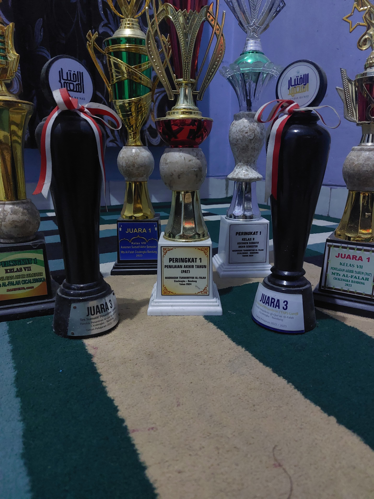
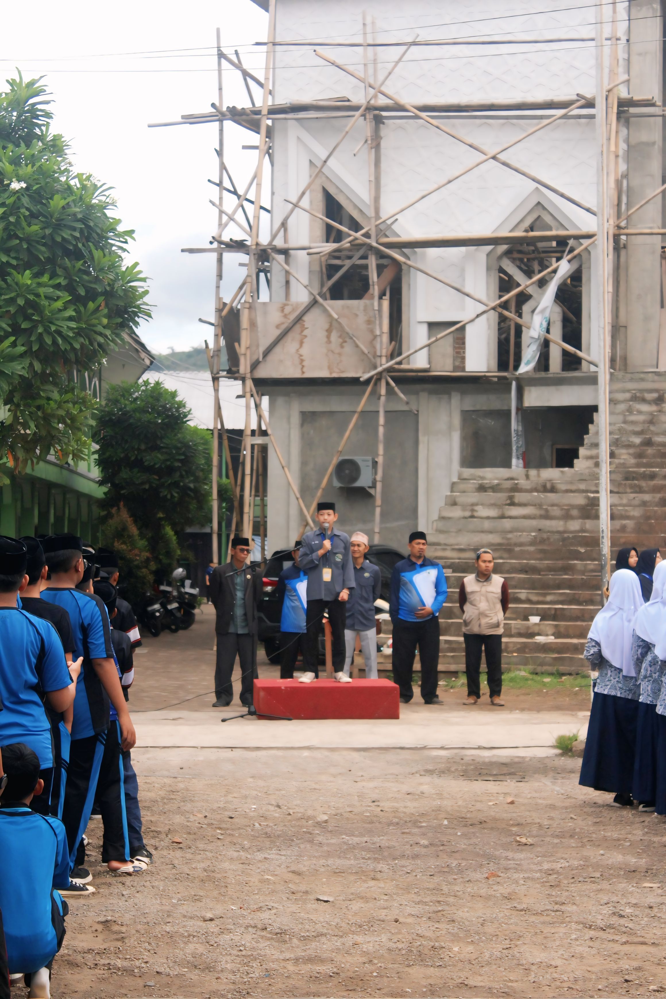
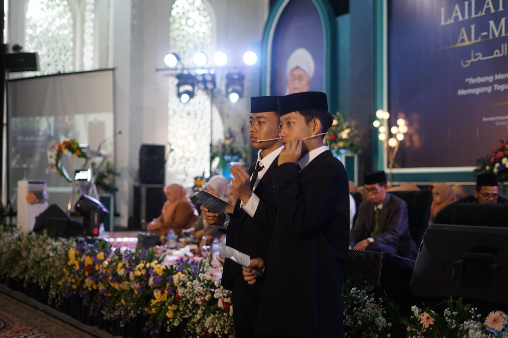
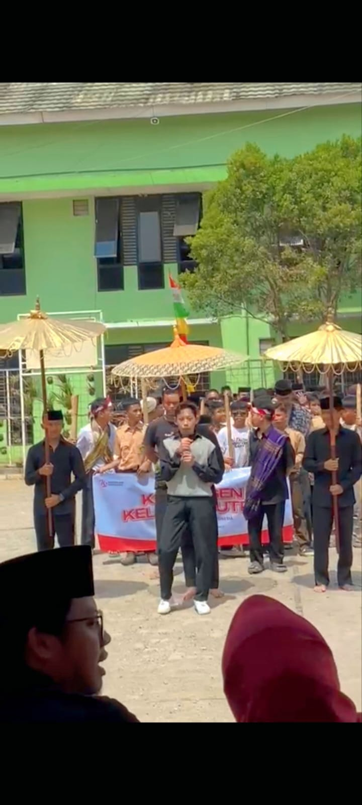

Lahir tanggal 7 Mei 2009
Rayon Cicurug 6
Roumble P2
Status siswa SMK Wikrama Bogor
Sekolah asal Pondok Pesantren
Al-Quran Al-Falah Bandung
selama 3 tahun pesantren juga bersekolah
mendapatkan berbagai penglaman
juga beberapa prestasi

Prestasi yaitu
Ranking 3 semester 1 kelas 7(pesantren)
Ranking 3 semester 2 kelas 7(pesantren)
Ranking 1 semester 1 kelas 7
Ranking 1 semester 2 kelas 7
Ranking 1 semester 1 kelas 8
Ranking 1 semester 2 kelas 8
Ranking 1 semester 1 kelas 9
Ranking 2 semester 2 kelas 9
Pengalaman yaitu
Menjadi OSIS di sekolah dan beberapakali ditunjuk sebagai
ketua pelaksana dibeberapa acara sekolah seperti classmeet
DLL.

Menjadi pembawa acara atau yang lebih sering dikenal sebagai
Master Of Ceremony (MC) di acara Lailatul Wida Almahilly atau
perpisahan lokal kelas 9 pesantren maupun sekolah.
dan di acara peringatan HUT RI ke 79


Mulai belajar HTML dan CSS sekitar 1 bulan yang lalu tapi dengan
tingkat kemalasan yang tinggi karna jujur hampir tidak ada bimbingan
sama sekali harus memulai darimana sekalipun kakak saya memiliki jurusan
yang sama tapi dia tidak pernah mengajari saya, dia hanya pernah menyuruh saya
menonton 1 vidio youtube yang berdurasi 15 menit tentang HTMl dasar
dan setelah itu membiarkan saya mengexplornya lebih dalam.Walau saya
memiliki masalah codingan ketika saya bertanya kepada kakak saya dia hanya
menjawab "teangan sorangan" akhirnya saya menonton berbagai vidio yang menjelaskan
tentang HTMl dan CSS hingga saya merasa kurang puas akan hasil dari youtube
sehingga saya mencari cara agar saya dapat membuat web sesuai dengan keinginan
saya maka saya meminta sedikit bantuan IA jika benar benar saya sudah pusing
saya tidak semata mata menjiplak dari IA tapi saya memintanya untuk mengajari
saya dan menjelaskannya secara singkat maupun rinci
dan sekarang seya sedang mencoba mempelajari javascrip